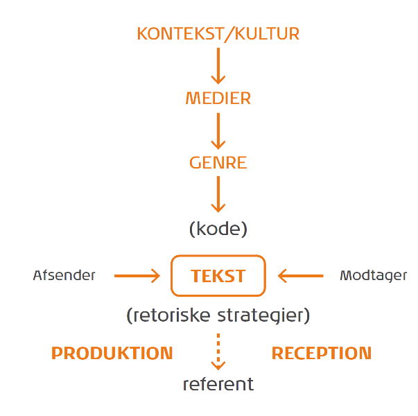
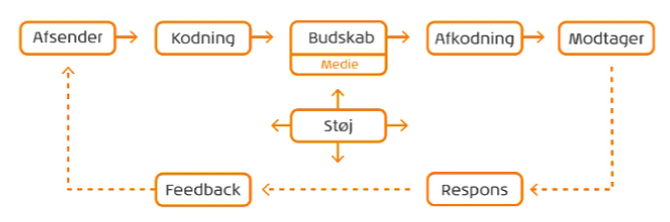

Det humantiske og det samfundvidenskabelige paradigme
Et paradigme er en overordnet måde at se tingene på, det vil sige en tænkemåde eller et system af tanker og sammenhæng.
Det humanistisk / Human paradigme = Det menneskelige, har fokus på modtageren.
Kommunikation er en aktivitet, fordi vi som mennesker snakker med hinanden, vi fortolker hinanden, analysere og forstår.
Keywords:
Hermeneutikken = læren om, hvordan tekster eller andre meningsfulde enheder forstås.
Fænomenologien = retning inden for moderne filosofi.
Den symbolske interaktionisme = En retning inden for sociologien der hovedsageligt har sit udspring i den amerikanske pragmatisme.
Pragmatisme = En generel teori om menneskelig erkendelse
Receptionsundersøgelser = Det modtageren forstår ved et givent budskab, og hvilken subjektiv oplevelse det giver.
Semiotik = Tegnprocesser findes i alle levende organismer og er grundlag for menneskelig tankevirksomhed og videnstilegnelse såvel som sociale fænomener som kultur og kommunikation.
Det kommunikative formål = Set fra både afsender og modtagersiden.
Trækstrukturer = Det er en tekst der gør det nemt for modtageren at forstå teksten. F.eks. en avisartikel eller reklameannonce.
Retoriske Strategier = mangeartede virkemidler, der anvendes, for at trækkene står tydelige. Kan både være verbal og visuel art.

Det humantiske paradigme
også kaldet interaktions paradigmet.
Grundlæggende er det optaget af interaktion mellem mennesker, og opfatter mennesker som aktivt og behovstyret.
Nogle karakteristiske træk for det humantiske er, fortolkninger, en kvalativ tilgang, induktion, noget der er
situationsbetemt, modtager orienteret, en interaktion imellem mennesker.
IMK - International Markeds Kommunikation
Ses som en modsvar til kotlers dominerende markedstingtilgang.
Tekst = Er den kommunikative instans, der er både produceret af modtageren og afsenderen. Et samarbejde.
Afsender = står for produktion.
Modtager = står for reception. Skaber mening ved deltagelse i en fortolkningsproces.
Referent = alt det teksten referer til. Det kan være et Produkt, men ofte er det den effekt et produkt giver, eller som det brand der ligger bag. f.eks. Læsø salt, det vil sige, at produktet ikke blåt er salt, men alt det, brandet føre med sig og referer til i modtagerens forståelse.
Koden = Det sprog (i bred betydning), modtageren skal kunne, for at forstå afsenderen.
Kontekst og Kultur = En den konkrete situation, der umiddelbart indrammer kommunikationssituationen. Dvs. svaret på, hvem, hvad, hvor og hvornår. Samtidig er det også den kultur, som situationen er påvirket af.
Afgørende for valg af medie - > kan virke stødende i et forkert medie.
Medier = faciliterer selve kommunikationssituationen. Kan både være printede medier, elektroniske medier eller mennesket selv.
Man skal gøre sig overvejelser omkring anvendelse og situation. Medier tilgodeser ofte forskellige forhold af både indholdsmæssige og praktiske karakter.
Genre = Samarbejdet mellem kultur/kontekst, medier og retoriske strategier. Genre er inddelt i 3 forskellige analyser. Det kommunikative formål, trækstrukturer og retoriske strategier.

Kotlers kommunikations model
Et transmissions paradigme / samfundsvidenskabeligt paradigme
Afsender = fortæller noget.
Modtager = den man siger det til.
Budskab = Det man gerne vil sige og kan kommunikeres via sociale medier, såsom - Facebook, Jodel, Instagram.
Det kan også kommunikeres via tale, kropssprog eller sedler.
Indkodning = at omsætte det der tumler rundt i ens hoved, så andre forstår det.
Afkodning = modtageren skal forstå hvad der bliver kommunikeret. Hvis modtageren ikke forstår hvad der bliver sagt, kan det blive modtaget forkert eller slet ikke.
Eksempelvis kommunikeret ved fremmedsprog eller f.eks. "Sup homie", kunne modtages som noget dårligt, selvom afsenderen måske havde gode intentioner.
Støj = kommunikations støj kan være mange ting der distrahere en. F.eks. man ser en reklame der kommunikere nogle produkter, men man så bliver distraheret af sin mobil så det ikke modtages.
Kan også være man druknes i kommunikation så man overser det man skal se efter (skilte).
Respons = tilbagemelding
Feedback = går tilbage til afsenderen.
Strategi = hvordan man får det ud i livet.
Kommunikation = formidle noget, så andre vil kunne forstå. Yderligere have forståelse for andres behov. Folk kan kommunikere tilbage til virksomheden. F.eks. trustpilot.
Kilder;
Busch, Anne mette. 2015. "Kommunikation i multimediedesign."